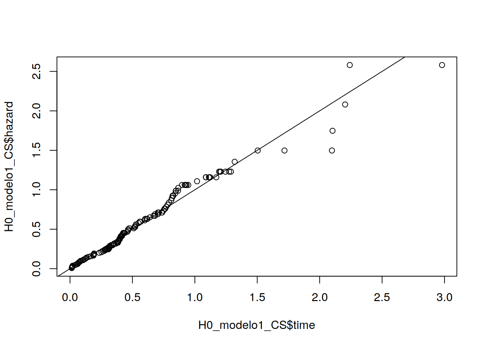
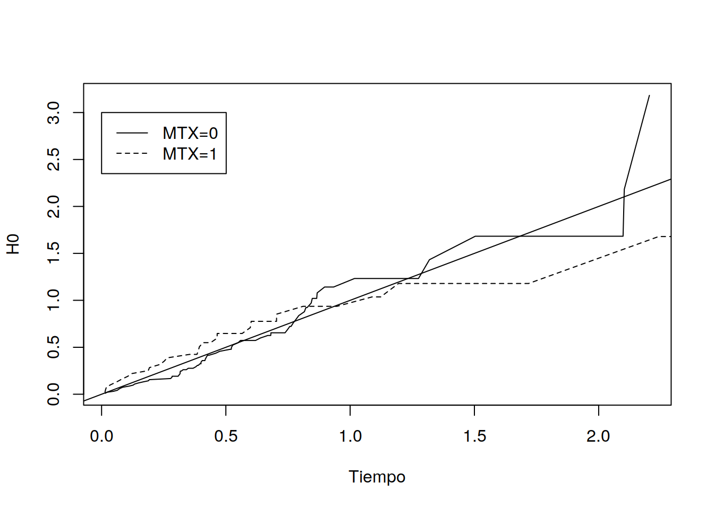
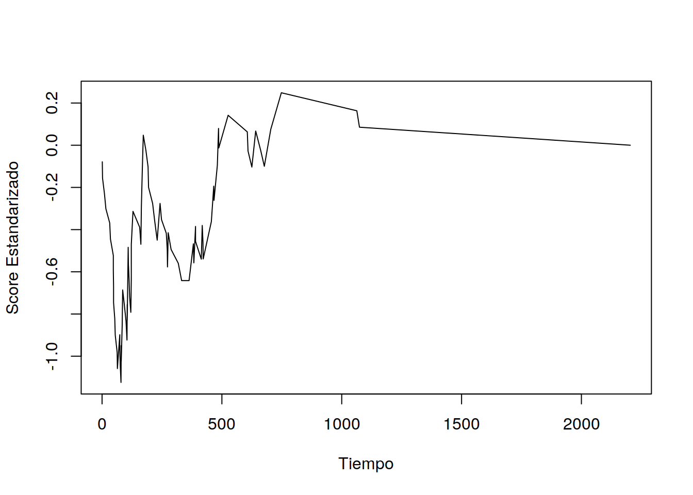
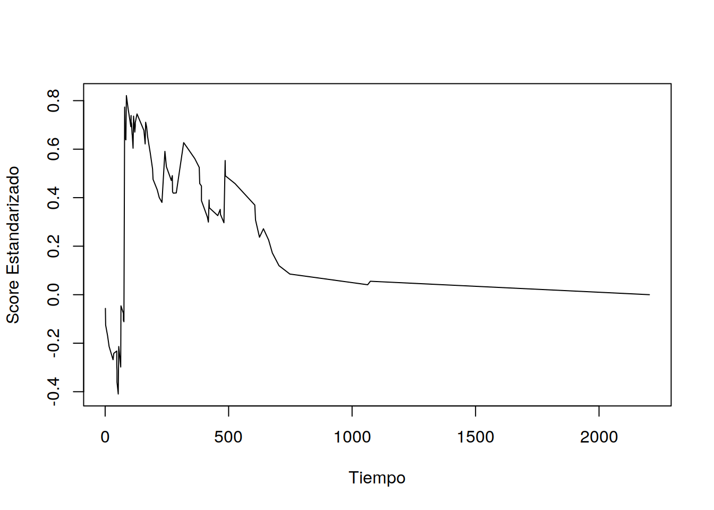
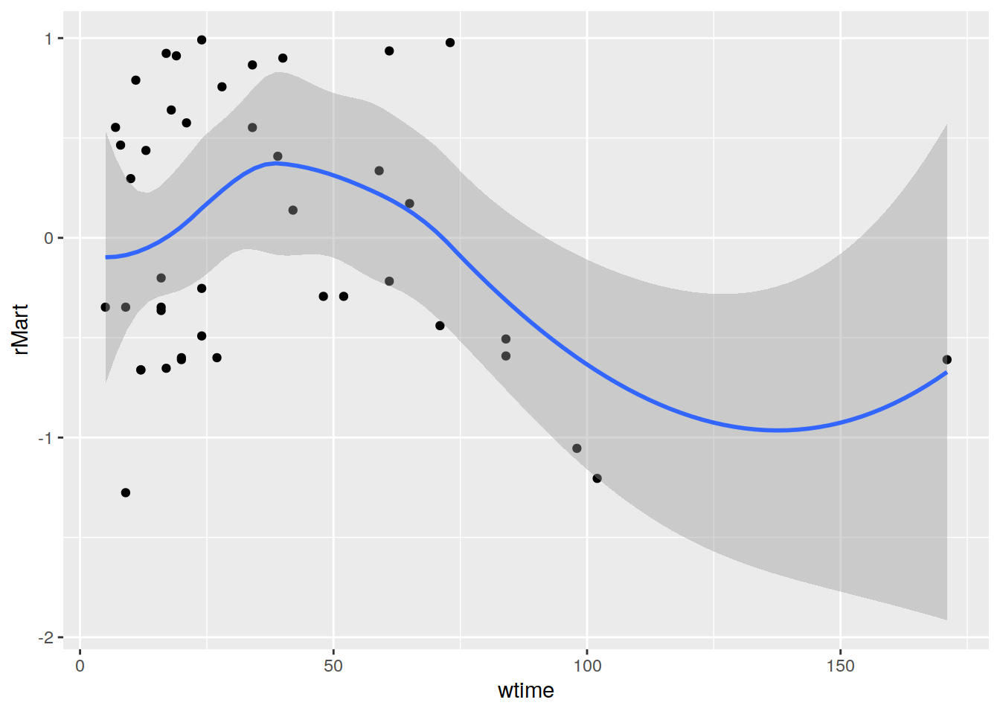
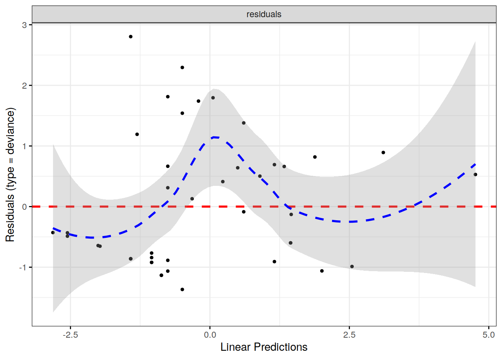
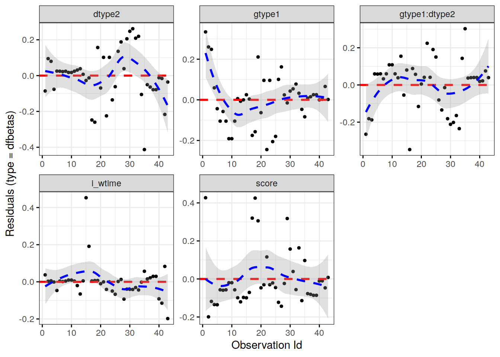

5 Análisis de Diagnósticos en el Modelo de Cox
5.1 Residuos de Cox-Snell
Suponga que un modelo de Cox se ha ajustado a los datos \((T_j,\delta_j,Z_j)\) para \(j=1,\ldots,n\). Además asuma que las covariables son estáticas (no dependen del tiempo). Debido a que:
\[S(X_j|Z_j)=1-F_T(X_j|Z_j)\sim \text{Unif}(0,1)\]
Entonces:
\[U=H(X_j|Z_j)=-\log S(X_j|Z_j)\sim \text{Exp}(1)\] donde \(X_j\): tiempo de ocurrencia del riesgo del individuo \(j\)-ésimo. Si \(b=(b_1,\ldots,b_p)^T\) es un estimador de \(\beta\) entonces los residuos de Cox-Snell se definen como:
\[r_j=\hat H_0(t)\exp\left(\sum_{k=1}^pZ_{jk}b_k\right),\qquad j=1,\ldots,n\] donde \(\hat H_0(t)\) es el estimador de Breslow de \(H_0(t)\).
Si el modelo de Cox es correcto entonces \(\{r_j\}_{j=1}^n\) es una muestra censurada de \(\text{Exp}(1)\).
- Calcule el estimador de Nelson-Aalen de \(H(t)\) usando la muestra \(\{r_t\}\). Bajo la hipótesis de bondad de ajuste:
\[H(t)=t\] 2. Grafique \(r_j\) versus \(\hat H(r_j)\) para \(j=1,\ldots,n\):
Nota: el estimador de Cox-Snell se puede definir en casos en donde las covariables dependen del tiempo y/o modelos estratificados:
\[r_j=\hat H_0(T_j)\exp\left(\sum_{k=1}^pZ_{jk}(T_j)b_k\right),\qquad j=1,\ldots,n\]
5.2 Residuos Martingala
Objetivo: definir posibles transformaciones sobre las covariables que permitan mejorar la capacidad explicativa de un modelo de Cox.
Suponga que \(Z_j(t)\) son covariables del individuo \(j\)-ésimo en el tiempo \(t\). Defina:
\[N_j(t)=\begin{cases} 1 & \text{individuo j-esimo ha experimentado el riesgo al tiempo t}\\ 0 & \text{si no.} \end{cases} \]
\[Y_j(t)=\begin{cases} 1 & \text{individuo j-esimo está bajo estudio inmediatamente antes del tiempo t}\\ 0 & \text{si no.} \end{cases} \]
El residuo martingala se define como:
\[\hat M_j=N_j(\infty)-\int_0^\infty Y_j(t)\exp[b^TZ_j(t)]d\hat H_0(t)\]
si los datos son censurados por la derecha y las covariables son fijas entonces:
\[\hat M_j=\delta_j-\hat H_0(T_j)\exp\left(\sum_{k=1}^pZ_{jk}b_k\right)=\delta_j-r_j \qquad j=1,\ldots,n\]
Propiedades:
\(\sum_{j=1}^n \hat M_j=0\)
Para muestras grandes \(\{\hat M_j\}\) son variables independientes con medias 0.
Si \(b=\beta\) y \(\hat H=H_0\) (valores reales) entonces \(M_j\) es martingala ya que:
\[\hat M_j=\text{número observado de eventos}-\text{número esperado de eventos bajo el modelo de Cox}\]
Entonces:
\[E[\hat M_j|\text{Información hasta tiempo t}]=0\]
Por otro lado, con el fin de resolver el objetivo, suponga que la covariable \(Z\) se divide en dos partes: \(Z^*\) (covariables con forma funcional conocida) y \(Z_1\) (covariables sin forma funcional conocida).
Suponga además que \(Z_1\) es independiente de \(Z^*\).
Sea \(f(Z_1)\) la mejor función de \(Z_1\) que explica su efecto en la sobrevivencia a través del modelo de Cox:
\[h(t|Z^*,Z_1)=h_0(t)\exp[\beta^*Z^*]\exp[f(Z_1)]\]
Procedimiento para encontrar \(f\):
Ajuste un modelo de Cox usando \(Z^*\) y calcule \(\hat M_j\) para \(j=1,\ldots,n\)
Grafique

5.3 Análisis descriptivo del Supuesto de Riesgos Proporcionales
Asuma que \(Z=(Z_1^T,Z_2^T)^T\) donde \(Z_1\): covariable a la que se le va a analizar el supuesto de riesgos proporcionales y \(Z_2\): vector de \(p-1\) restantes covariables. Asuma que no hay interacción entre \(Z_1\) y \(Z_2\).
Primer gráfico
Separe \(Z_1\) en \(k\) estratos disjuntos (llámese \(G_1,\ldots,G_k\) a los estratos en el caso continuo o bien en el caso discreto los valores de \(Z_1\) se pueden etiquetar como \(1,\ldots,k\)).
Estime un modelo de Cox estratificado sobre los niveles de \(Z_1\).
Sea \(\hat H_{g0}\) la tasa acumulada base de riesgo en el estrato \(g\)-ésimo. (\(\hat H_{g0}(t)\) debe ser proporcional entre distintos valores de \(g=1,\ldots,k\)).
Grafique \(t\) versus \(\log[\hat H_{g0}(t)]\). Bajo el supuesto de riesgos proporcionales los gráficos deberían ser lineales.
Otro gráfico posible es \(\log[\hat H_{g0}(t)]-\log[\hat H_{10}(t)]\) versus \(t\). En este caso cada gráfico debería ser aproximadamente constante bajo el mismo supuesto.
Inconveniente: los gráficos no dan información detallada del tipo de desviación que tuvo una covariable con respecto al supuesto de riesgos proporcionales.
Segundo gráfico (Gráfico de Andersen)
- Grafique \(\hat H_{g0}(t)\) versus \(\hat H_{10}(t)\) para \(g=2,\ldots,k\). Bajo el supuesto de riesgos proporcionales, las curvas deben ser líneas rectas a través del origen.
Si \(H_{g0}(t)=e^{\gamma_g}H_{10}(t)\) entonces la pendiente de la curva es un estimador de \(e^{\gamma_g}\).
Inconveniente: la varianza de \(\hat H_{g0}(t)\) depende de \(t\), por lo tanto los tres gráficos deben ser interpretados con cuidado.
Tercer gráfico (Gráfico de Arjas)
Suponga que un modelo de Cox ha sido ajustado con un vector \(Z^*\) de covariables (de tamaño \(p\)) y se quiere comprobar si una nueva covariable \(Z\):
Debe ser incluida en el modelo.
\(Z\) tiene riesgos proporcionales después de incluir \(Z^*\).
Sea \(\hat H(t|Z_j^*)\) la tasa de riesgo del modelo ajustado para el individuo \(j\)-ésimo. Bajo una agrupación de la covariable \(Z\) en \(k\) estratos se calcula para cada uno de ellos:
\[TOT_g(t_i)=\sum_{Z_{1j}=g}\hat H(\min(t_i,T_j)|Z_j^*)\] el cual es el
tiempo total esperado a prueba. El número observado de eventos que han ocurrido hasta tiempo \(t_i\) es:
\[N_{g}(t_i)=\sum_{Z_{1j}=g}\delta_j1(T_j\leq t_i)\]
Si la covariable \(Z\) no necesita estar en el modelo entonces \(N_g(t_i)-TOT_g(t_i)\) es una martingala, para cada \(g\).

Si la covariable \(Z\) debe ser incluida en el modelo entonces:
\[h(t|Z=g,Z^*)=h_0(t)\exp(\gamma_g)\exp(\beta^TZ^*)\]
y las curvas son aproximadamente lineales con pendientes distintas de 1. Si \(Z\) no satisface el principio de riesgos proporcionales entonces las curvas no son lineales y su pendiente difiere de 1.
Cuarto gráfico (Residuos score)
Se ajusta un modelo de Cox sobre las \(p\) covariables. Sea \(b\) el estimador de verosimilitud parcial de \(\beta\) y \(\hat H_0(t)\) la tasa de riesgo base estimada. Considere:
\(N_j(t)\): indicadora de que el \(j\)-ésimo paciente/sujeto ha experimentado el riesgo en tiempo \(t\)
\(Y_j(t)\): indicadora de que el \(j\)-ésimo sujeto está bajo estudio justo antes del tiempo \(t\).
Para la \(k\)-ésima covariable defina:
\[\bar Z_k(t)=\frac{\sum_{j=1}^n Y_j(t)Z_{jk}(t)\exp[b^TZ_j(t)]}{\sum_{j=1}^n Y_j(t)\exp[b^TZ_j(t)]}\]
el cual es un promedio ponderado de \(Z_{jk}(t)\) y sea \(\hat M_j(t)\) el residuo martingala al tiempo \(t\) para el individuo \(j\)-ésimo:
\[\hat M_j(t)=N_j(t)-\int_0^tY_j(u)\exp[b^TZ_j(u)]d\hat H_0(u)\qquad j=1,\ldots,n\]
El residuo score para la \(k\)-ésima covariable y el individuo \(j\)-ésimo se define como:
\[S_{jk}(t)=\int_0^t[Z_{jk}(u)-\bar Z_k(u)]d\hat M_j(u)\]
El proceso score para la \(k\)-ésima covariable es:
\[U_k(t)=\sum_{j=1}^n S_{jk}(t)\] En el caso de que todas las covariables son fijas en tiempo 0 entonces:
\[U_k(t)=\sum_{\text{muertes}\leq t}\underbrace{[Z_{jk}-\bar Z_k(T_j)]}_\text{residuos de Schoenfeld}\]
Nota: el proceso score \(U_k(t)\) es la primera derivada parcial de la verosimilitud parcial del modelo de Cox ajustado con información hasta tiempo \(t\). Además:
\[U_k(0)=0 \qquad \text{y} \qquad U_k(\infty)=0\]
dado que \(b\) resuelve la ecuación score. Además bajo la hipótesis de que el modelo ajusta bien entonces:
\[W_k(t)=U_k(t)\cdot \text{Error estándar}(b_k)\]
y la expresión anterior converge a un puente browniano que se anula en 0 y en \(\infty\), siempre y cuando \(\text{Cov}(b_k,b_{k'})=0\) para \(k\neq k'\).

En el gráfico anterior, en el cuadrante superior se nota que existe evidencia en contra de \(H_0\) ya que \(W_k(t)\) es superior al cuantil superior bajo \(H_0\), es decir el supuesto de riesgos proporcionales para \(Z_k\) no es cierto.
5.4 Identificación de Outliers
Con el fin de detectar outliers podemos usar un gráfico con los residuos martingala (\(\hat M_j\)) vs \(j\).
Principal problema: valor máximo del residuo=1 y el valor mínimo del residuo=\(-\infty\). Por lo tanto los residuos martingala son muy asimétricos.
Solución: modificar \(\hat M_j\) a través del residuo de devianza:
\[D_j=\text{signo}[\hat M_j]\cdot \left\{-2\left[\hat M_j+\delta_j\log(\delta_j-\hat M_j)\right] \right\}^{1/2}\]
Si \(\hat M_j=0\) entonces \(D_j=0\)
Si \(\hat M_j\longrightarrow 1\) entonces \(D_j\longrightarrow \infty\)
Si \(\hat M_j\longrightarrow -\infty\) entonces \(D_j\longrightarrow -\infty\) (a una menor tasa).
Gráfico sugerido (misma interpretación de un gráfico de residuos en regresión):

donde el score de riesgo es:
\[\text{Score de riesgo}_j=\sum_{k=1}^p b_kZ_{jk}\] La identificación de outliers se puede realizar bajo el supuesto de normalidad en los residuos \(N(0,1)\).
5.5 Gráfico de Influencia
Con el fin de verificar el grado de influencia de cada observación en los estimadores de \(\beta\), se compara \(b\) con \(b_{(j)}\): estimador de \(\beta\) quitando la \(j\)-ésima observación. Esto se hace simplemente a través de la diferencia \(b-b_{(j)}\), en el sentido de que si \(b-b_{(j)}\) es pequeño, entonces la observación tiene poca influencia.
Problema: el procedimiento anterior implica realizar \(n+1\) regresiones de Cox.
Solución: usar una aproximación para no tener que calcular todas las regresiones:
Sea \(S_{jk}=S_{jk}(\infty)\) (residuo score). Si todas las covariables son fijas en tiempo 0:
\[S_{jk}=\underbrace{\delta_j[Z_{jk}-\bar Z_k(T_j)]}_{\text{Residuo parcial de Schoenfeld}}-\sum_{t_b\leq T_j}[Z_{jk}-\bar Z_k(T_b)]\exp(b^TZ_j)\cdot [\hat H_0(t_b)-\hat H_0(t_{b-1})]\]
para \(j=1,\ldots,n\) y \(k=1,\ldots,p\).
Se puede comprobar que \(b-b_{(j)}\approx \Delta_j\) donde:
\[\Delta_j=I(b)^{-1}(S_{j1},\ldots,S_{jp})^T\]
donde \(I(b)\) es la información de Fisher observada.
Gráficos:

en donde el gráfico de la derecha muestra el nivel de influencia de las observaciones sobre la \(k\)-ésima covariable.
5.6 Laboratorio
5.6.1 Ejemplo 1
En este ejemplo retomamos los datos de pacientes que han tenido un transplante de médula ósea y se analiza el riesgo de muerte o reaparición de la leucemia. Cargamos datos y paquetes:
library(survival)
library(survMisc)
library(KMsurv)
library(tidyverse)
library(survminer)
data(bmt)Ajustamos un modelo de Cox con las siguientes covariables:
bmt <- bmt %>%
mutate(waiting=z7/30-9,FAB=factor(z8),
MTX=factor(z10),SXPa=factor(z3),
SXDo=factor(z4),CMVPa=factor(z5),
CMVDo=factor(z6),AgePa=z1-28,AgeDo=z2-28,
group=factor(group))
bmt_2 <- bmt %>% select(t2,d3,group,waiting,FAB,MTX,AgePa,
AgeDo)
modelo1 <- coxph(Surv(time=t2, event=d3)~AgePa*AgeDo+group+FAB+waiting+MTX,data = bmt_2)
summary(modelo1)Call:
coxph(formula = Surv(time = t2, event = d3) ~ AgePa * AgeDo +
group + FAB + waiting + MTX, data = bmt_2)
n= 137, number of events= 83
coef exp(coef) se(coef) z Pr(>|z|)
AgePa 0.0027997 1.0028036 0.0200198 0.140 0.88878
AgeDo 0.0036966 1.0037034 0.0182119 0.203 0.83915
group2 -1.0737773 0.3417153 0.3710846 -2.894 0.00381 **
group3 -0.3860071 0.6797657 0.3725912 -1.036 0.30020
FAB1 0.8369481 2.3093085 0.2796202 2.993 0.00276 **
waiting -0.0077053 0.9923243 0.0112797 -0.683 0.49454
MTX1 0.3042036 1.3555451 0.2529846 1.202 0.22919
AgePa:AgeDo 0.0030658 1.0030705 0.0009537 3.215 0.00131 **
---
Signif. codes: 0 '***' 0.001 '**' 0.01 '*' 0.05 '.' 0.1 ' ' 1
exp(coef) exp(-coef) lower .95 upper .95
AgePa 1.0028 0.9972 0.9642 1.0429
AgeDo 1.0037 0.9963 0.9685 1.0402
group2 0.3417 2.9264 0.1651 0.7072
group3 0.6798 1.4711 0.3275 1.4109
FAB1 2.3093 0.4330 1.3350 3.9948
waiting 0.9923 1.0077 0.9706 1.0145
MTX1 1.3555 0.7377 0.8256 2.2256
AgePa:AgeDo 1.0031 0.9969 1.0012 1.0049
Concordance= 0.681 (se = 0.031 )
Likelihood ratio test= 34.71 on 8 df, p=3e-05
Wald test = 35.61 on 8 df, p=2e-05
Score (logrank) test = 38.69 on 8 df, p=6e-06Antes de calcular los residuos de Cox-Snell calculamos los residuos Martingala, y después los obtenemos por diferencia con respecto a los eventos observados:
bmt_2$rMart <- residuals(modelo1,type = 'martingale')
bmt_2$rCox <- bmt$d3-bmt_2$rMartAhora calculamos el estimador de Nelson-Aalen usando como tiempos los residuos de Cox-Snell:
modelo1_CoxSnell <- coxph(Surv(rCox,d3)~1,data = bmt_2,ties = 'breslow')y calculamos la tasa acumulada:
H0_modelo1_CS <- basehaz(modelo1_CoxSnell,centered = FALSE)
plot(H0_modelo1_CS$time,H0_modelo1_CS$hazard)
abline(a = 0,b=1)
de donde se puede concluir que el ajuste no es malo. Anteriormente habíamos puesto en duda el supuesto de riesgos proporcionales en la variable MTX. Hacemos el gráfico para los dos niveles de la variable MTX y los comparamos:
modelo1_CoxSnell_MTX1 <- coxph(Surv(rCox,d3)~1,data = subset(bmt_2,MTX==1),ties = 'breslow')
modelo1_CoxSnell_MTX0 <- coxph(Surv(rCox,d3)~1,data = subset(bmt_2,MTX==0),ties = 'breslow')
H0_modelo1_CS_MTX1 <- basehaz(modelo1_CoxSnell_MTX1,centered = FALSE)
H0_modelo1_CS_MTX0 <- basehaz(modelo1_CoxSnell_MTX0,centered = FALSE)
plot(H0_modelo1_CS_MTX0$time,H0_modelo1_CS_MTX0$hazard,type='l',xlab='Tiempo',ylab='H0')
lines(H0_modelo1_CS_MTX1$time,H0_modelo1_CS_MTX1$hazard,lty=2)
abline(a = 0,b=1)
legend(x = 0,y = 3,legend = c('MTX=0','MTX=1'),lty=c(1,2))
A partir de este gráfico vemos que el supuesto de riesgos proporcionales no es tan evidente para la covariable MTX. Una posible forma de solucionarlo es a través de un modelo estratificado. Ejercicio: Repetir el procedimiento anterior con el modelo estratificado y comparar con la figura 11.3 del Klein.
Otra posible forma de verificar gráficamente el supuesto de riesgos proporcionales es a través del proceso score, el cual es calculado usando los residuos de Schoenfeld sobre los riesgos observados:
rSchoen <- residuals(modelo1,type = 'schoenfeld')
muertes <- bmt_2 %>% filter(d3==1) %>%
mutate(rSchoen_MTX=rSchoen[,7],rSchoen_wait=rSchoen[,6])%>%
arrange(t2)%>% mutate(Uk_MTX=cumsum(rSchoen_MTX),Uk_wait=cumsum(rSchoen_wait))
resumen_m1 <- summary(modelo1)
plot(muertes$t2,resumen_m1$coefficients[7,3]*muertes$Uk_MTX,
type='l',xlab='Tiempo',ylab='Score Estandarizado')
abline(h=c(-1.3581,1.3581))
plot(muertes$t2,resumen_m1$coefficients[6,3]*muertes$Uk_wait,
type='l',xlab='Tiempo',ylab='Score Estandarizado')
abline(h=c(-1.3581,1.3581))
En ambos casos no se sobrepasa los umbrales de confianza de un puente Browniano al 95%, pero hay más evidencia (aunque muy poca) de que la variable MTX no satisface el supuesto de riesgos proporcionales.
5.6.2 Ejemplo 2
El siguiente ejemplo es de 43 pacientes que recibieron un transplante de médula ósea que tenían la enfermedad de Hodgkin (HOD) o el linfoma no-Hodgkin (NHL) (dtype) y se le suministró dos tipos distintos de transplantes (gtype: Allo, Auto). Dos covariables adicionales son el score de Karnofsky (score) y el tiempo de espera desde el diagnóstico hasta el transplante (wtime). Carga de datos:
data(hodg)
head(hodg) gtype dtype time delta score wtime
1 1 1 28 1 90 24
2 1 1 32 1 30 7
3 1 1 49 1 40 8
4 1 1 84 1 60 10
5 1 1 357 1 70 42
6 1 1 933 0 90 9Ahora se determinará la mejor transformación de la variable wtime para el análisis a través de los residuos martingala del modelo reducido sin la variable wtime:
hodg <- hodg %>% mutate(gtype=factor(gtype),dtype=factor(dtype))
modelo2_ww <- coxph(Surv(time,delta)~gtype*dtype+score,data = hodg)
residuos_mart_w <- residuals(modelo2_ww,type = 'martingale')
datos_mart <- hodg %>% select(wtime) %>% mutate(rMart=residuos_mart_w)
grafico_mart <- ggplot(data = datos_mart,mapping = aes(x=wtime,y = rMart))+geom_point()+geom_smooth()
grafico_mart`geom_smooth()` using method = 'loess' and formula = 'y ~ x'
En donde se puede observar que hay un comportamiento muy diferente en los residuos martingala antes y después de 75 meses. Una posible solución es usar una indicadora a los 75 meses. Usando las técnicas de discretización de variables que vimos en el capítulo 8 (prueba de Contal-O’Quigley):
modelo2 <- coxph(Surv(time,delta)~gtype*dtype+score+wtime,data = hodg)
Contal_modelo2 <- cutp(modelo2)
Contal_modelo2$wtime[1,] wtime U Q p
1: 84 3.206373 0.6813505 0.7420152Por lo tanto se selecciona un corte de 84 meses para la definición de la indicadora. Definimos la variable indicadora:
hodg <- hodg %>% mutate(i_wtime=ifelse(wtime>=84,1,0))
contrasts(hodg$gtype) <- contr.treatment(n = 2,base = 2)
contrasts(hodg$dtype) 2
1 0
2 1modelo2_wi <- coxph(Surv(time,delta)~gtype*dtype+score+i_wtime,data = hodg)
summary(modelo2_wi)Call:
coxph(formula = Surv(time, delta) ~ gtype * dtype + score + i_wtime,
data = hodg)
n= 43, number of events= 26
coef exp(coef) se(coef) z Pr(>|z|)
gtype1 -0.66509 0.51423 0.59432 -1.119 0.2631
dtype2 0.26048 1.29756 0.55547 0.469 0.6391
score -0.05504 0.94644 0.01234 -4.459 8.23e-06 ***
i_wtime -2.05982 0.12748 1.05066 -1.961 0.0499 *
gtype1:dtype2 2.06684 7.89983 0.92577 2.233 0.0256 *
---
Signif. codes: 0 '***' 0.001 '**' 0.01 '*' 0.05 '.' 0.1 ' ' 1
exp(coef) exp(-coef) lower .95 upper .95
gtype1 0.5142 1.9447 0.16042 1.6483
dtype2 1.2976 0.7707 0.43683 3.8543
score 0.9464 1.0566 0.92382 0.9696
i_wtime 0.1275 7.8446 0.01626 0.9994
gtype1:dtype2 7.8998 0.1266 1.28705 48.4885
Concordance= 0.796 (se = 0.05 )
Likelihood ratio test= 35.48 on 5 df, p=1e-06
Wald test = 28.8 on 5 df, p=3e-05
Score (logrank) test = 40.09 on 5 df, p=1e-07En este caso graficamos los residuos de devianza vs los scores de riesgo:
ggcoxdiagnostics(modelo2_wi,type = 'deviance',ggtheme = theme_bw())Warning: `gather_()` was deprecated in tidyr 1.2.0.
ℹ Please use `gather()` instead.
ℹ The deprecated feature was likely used in the survminer package.
Please report the issue at <]8;;https://github.com/kassambara/survminer/issueshttps://github.com/kassambara/survminer/issues]8;;>.`geom_smooth()` using formula = 'y ~ x'
donde podemos observar que hay un par de individuos con valores relativamente altos en su residuos de devianza:
hodg <- hodg %>% mutate(rDev=residuals(modelo2_wi,type = 'deviance'))
mayores_dev <- hodg %>% arrange(desc(rDev))
mayores_dev[1:2,] gtype dtype time delta score wtime i_wtime rDev
1 1 1 28 1 90 24 0 2.80429
2 2 2 30 1 90 73 0 2.29525Noten que los dos individuos fallecieron al mes aproximadamente, pero sus scores de riesgo eran bajos, es decir se esperaba que los dos sobrevivieran más.
Ahora graficamos los estadísticos de influencia de las observaciones:
ggcoxdiagnostics(modelo2_wi,type = 'dfbetas')Warning: contrasts dropped from factor gtype`geom_smooth()` using formula = 'y ~ x'
influence_m <- residuals(modelo2_wi,type = 'dfbetas')Warning: contrasts dropped from factor gtypeNote que el individuo con mayor influencia en la estimación del score es el número 1:
which.max(influence_m[,3])1
1 hodg[which.max(abs(influence_m[,3])),] gtype dtype time delta score wtime i_wtime rDev
1 1 1 28 1 90 24 0 2.80429y es un individuo con un score relativamente alto (indicador de buen estado físico) pero murió en un momento muy temprano (1 mes aproximadamente). Este individuo es el mismo con un residuo de devianza alto.